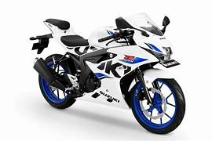

Suzuki GSX-R150 vale a pena?

Conheça a Suzuki GSX-R150
A Suzuki GSX-R150 é uma moto esportiva de baixa cilindrada que chama atenção pelo visual agressivo e inspirado nas motos de alta performance da linha GSX-R. Ela é voltada para quem busca uma moto com estilo esportivo, mas com custo mais acessível.
Por isso, muitas pessoas pesquisam se a Suzuki GSX-R150 vale a pena antes de comprar. O modelo tenta entregar uma experiência esportiva dentro de uma categoria mais econômica.
Com carenagem completa e posição de pilotagem mais inclinada, a GSX-R150 oferece uma sensação próxima de motos maiores.
Motor e desempenho
A GSX-R150 possui um motor de aproximadamente 150 cilindradas, com bom desempenho para a categoria.
A velocidade máxima pode chegar a cerca de 130 km/h, o que é um número alto para motos dessa faixa.
O motor responde bem e entrega uma pilotagem divertida, especialmente para quem gosta de motos esportivas.
Consumo de combustível
Mesmo sendo esportiva, a GSX-R150 apresenta um consumo interessante, ficando na média de 35 km/l a 45 km/l.
Isso permite usar a moto no dia a dia sem gastar muito combustível.
Preço da Suzuki GSX-R150
O preço da Suzuki GSX-R150 pode variar bastante, já que não é tão comum no Brasil, mas costuma ficar entre R$ 18.000 e R$ 23.000.
No mercado de usadas, pode ser encontrada entre R$ 13.000 e R$ 18.000.
Para quem busca uma moto esportiva diferente, o custo pode valer a pena.
Conforto e uso no dia a dia
Por ser uma moto esportiva, o conforto não é o principal foco. A posição de pilotagem é mais inclinada, o que pode cansar em trajetos longos.
No entanto, para trajetos curtos e uso urbano, ela ainda pode ser utilizada sem grandes problemas.
Conclusão: Suzuki GSX-R150 vale a pena?
De forma geral, a resposta é que a Suzuki GSX-R150 vale a pena para quem quer uma moto esportiva leve, econômica e com visual agressivo.
Ela não é focada em conforto, mas entrega desempenho e estilo dentro da categoria.
Para quem gosta de esportividade e quer algo diferente, é uma excelente escolha.
Outras notícias
Suzuki Gixxer 150 vale a pena?